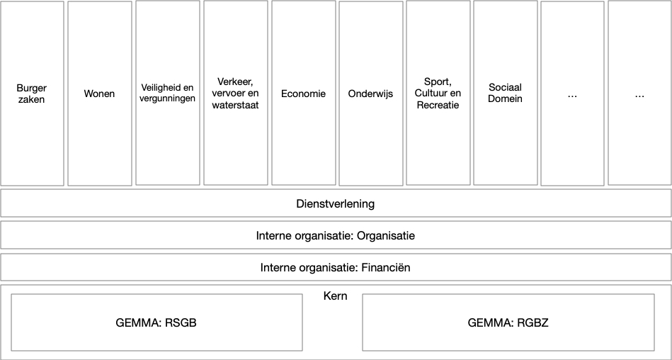

Gemeentelijk Gegevensmodel
Het Gemeentelijk Gegevensmodel (GGM) is een logisch gegevensmodel met daarin vertegenwoodigd alle beleidsterreinen van de gemeente. Het GGM is ontwikkeld in opdracht van de Gemeente Delft ter ondersteuning van de visie op het gebied van informatiegestuurd werken. Onder andere wordt het GGM gebruikt als centraal datamodel in het datawarehouse. Hiertoe is een generator beschikbaar om het GGM te vertalen naar fysieke databasetabellen.
Het GGM omvat alle beleidsterreinen die onder de verantwoordelijkheid van de gemeente vallen. Dit ongeacht de organisatorische inrichting, zoals de afdelingen die de bijbehorende taken uitvoeren en uitbesteding aan derde partijen. Deze beleidsterreinen zijn afgeleid van de IV3-taakvelden.
Bij het GGM is een set codegeneratietemplates ontwikkeld voor het genereren van fysieke datamodellen op basis van (onderdelen van) het GGM. Hiermee genereer je DDL voor diverse RDBMS'en. Wij gebruikten Oracle en in ongeteste vorm zijn de templates beschikbaar voor MySQL, en maakten hier diverse aanvullingen voor. Het gaat hier om templates voor het Code Template Framework van Enterprise Architect.
GitHub-repository
De bestanden waar deze documentatie bij hoort zijn te vinden in de GitHub-repository Gemeentelijk Gegevensmodel
Installatie en gebruik
Het Gemeentelijk Gegevensmodel is beschikbaar in XMI-vorm, en is ontwikkeld in, en toegepast met Enterprise Architect.
Installatie Gemeentelijk Gegevensmodel
We bieden het GGM in twee vormen aan:
- Als EAP-bestand, te gebruiken voor de gratis Enterprise Architect Viewer. En natuurlijk de overige versies van Enterprise Architect. Download hiervoor het bestand Gemeentelijk_Gegevensmodel.xml en open het in (de viewer van) Enterprise Architect.
- Als XMI-bestand, om geladen te worden in een (nieuw) project in Enterprise Architect, of om geladen te worden in andere UML-tooling. Voor installatie-instructies kijk hier.
Installatie Codegeneratietemplates
De installatie en gebruik van de codegeneratietemplates staat hier beschreven.
Versies en gebruikte tooling
Het XMI-bestand van het Gemeentelijk Gegevensmodel is in theorie te gebruiken in andere tools naast Enterprise Architect, maar daar is geen ervaring mee. Ervaringen hierin zijn welkom!
Het Gemeentelijk Gegevensmodel is beschikbaar in:
Het is Getest en gebruikt in de volgende omgevingen:
Opbouw Gemeentelijk Gegevensmodel
Het GGM kent een gelaagde opbouw, waarbij verschillende objecttypen over beleidsdomeinen heen zoveel mogelijk zijn ontkoppeld. Alleen objecttypen in de onderste lagen van het model worden gebruikt door de bovenliggende onderdelen.

Het gegevensmodel is uitgewerkt in een aantal verticale beleidsdomeinen en 4 horizontale beleidsdomeinen. De horizontale delen (Kern, Financiën, ICT en Dienstverlening) vormen de basis van het gegevensmodel, waarop de verticale delen voortbouwen. De Kern bestaat uit RSGB en RGBZ, die de gegevensdefinities bevatten die zoals die gelden voor de basisregistraties (RSGB) en zaakgericht werken (RGBZ).
Er is ontkoppeling tussen de verschillende (sub)domeinen nagestreefd, doordat in de gegevensdefinities van het gegevensmodel (sub)domeinen alleen definities uit onderliggende (sub)domeinen gebruiken. Zo gebruiken alle (sub)domeinen gegevensdefinities uit Kern en kunnen alle verticale (sub)domeinen gegevensdefinities gebruiken uit de 4 horizontale modellen.
Beleidsdomeinen
Het gegevensmodel omvat de volgende op de gebaseerde IV3-taakvelden:
- Burgerzaken
- Economie
- Griffie
- Leerplicht en Leerlingenvervoer
- Onderwijs
- Ruimte
- Beheer Openbare Ruimte
- Omgevingswet
- Afval
- Sport, Cultuur en Recreatie
- Erfgoed, Archeologie
- Erfgoed, Archief
- Erfgoed, Monumenten
- Museum
- Sport
- Vergunningverlening, Toezicht en handhaving
- Brede Handhaving
- Bouwen en wonen
- Overige vergunningen
- Volksgezonheid en milieu (nog in ontwikkeling)
- Bestuur en ondersteuning
- ICT
- Vastgoed
- Financien
- HR
- Inkoop
- Subsidies
- Facilitair (nog in ontwikkeling)
- Communicatie (nog in ontwikkeling)
- Control (nog in ontwikkeling)
- Organisatie Algemeen
- Dienstverlening
- Sociaal domein
- Wmo
- Jeugd
- Participatie
- Schuldhulpverlening
- Sociale teams
- Gemeentebegrafenissen
- Dak- en thuislozen
- Verkeer en vervoer
- Verkeer
- Parkeren
Naast bovengenoemde beleidsterreinen kent het GGM het onderdeel 'Kern', waarin alle gedeelde objecttypen zijn te vinden. Kern is afgeleid van het Informatiemodel Basis- en Kerngegevens (RSGB) en Informatiemodel Zaken (RGBZ) (beiden onderdeel GEMMA: Gemeentelijke Modelarchitectuur), aangevuld met een aantal generieke objecttypen.
Toegepaste Landelijke standaarden
Nederland kent op dit moment een lappendeken aan standaarden voor gegevensuitwisseling en informatiemodellen. Samenhang tussen deze standaarden en is beperkt. Relevante standaarden zijnn zoveel mogelijk in samenhang binnen de afzonderlijke domeinen in het GGM opgenomen. Het stelsel van basisregistraties, en het daarop gerichte RSGB geven hiervoor wel enige houvast. In het GGM heeft het RSGB daarom een centrale plek.
De volgende standaarden zijn gebruikt bij de totstandkoming van het GGM, en maken onderdeel uit van het GGM:
- Informatiemodel Basis- en Kerngegevens (RSGB) versie 2.0.2. Het RSGB is as-is gebruikt in het onderdeel Kern van het GGM. Op het RSGB zijn enkele aanpassingen gebaseerd op RSGB 3.0 in het kader van het domein Ruimte en aanvulling voor leges en precario doorgevoerd (er was geen ondersteuning voor deze laatste).
- Informatiemodel Zaken (RGBZ) versie 1.0. Het RGBZ is as-is gebruikt in het onderdeel Kern van het GGM.
- iWmo versie 2.3. iWmo is een berichtenstandaard voor het uitwisselen van gegevens tussen zorgaanbieders en gemeenten met achterliggend informatiemodel. Dit informatiemodel vormt samen met de iJw-standaard de basis voor het Jeugd- en Wmo-deel van het beleidsdomein Sociaal Domein. Deze zijn in de uitwerking aangevuld met diverse objecttypen.
- iJw versie 2.3. Zie iWmo.
- iPgb versie 1.0. Hiervan zijn de informatiemodellen van toekenningsbericht (TKB) en het budgetafsluitbericht (BAB) toegepast.
- Suwi Gegevensregister (SGR) versie 4.0. Het SGR is een gegevensmodel uit de keten van Werk en Inkomen dat dient als een gemeenschappelijk gedragen kader waarop de berichten uit het SuwiML zijn gebaseerd. Er is gebruik gemaakt van het berichtenschema (XSD's) op basis waarvan de relevante objecttypen zijn afgeleid.
- Informatiemodel Beheer Openbare Ruimte (IMBOR) versie 1.2.04. Het (IMBOR) bevat de afspraken over de benamingen en definities van de beheergegevens die aan de objecten in de openbare ruimte gekoppeld kunnen worden. Dit inclusief de samenhang tussen deze gegevens. De objecttypen uit de Basisregistratie Grootschalige Topografie (BGT) en het Informatiemodel geografie (IMGeo) vormen de basis. Beiden maken onderdeel uit van het RSGB. In het GGM is een koppeling gemaakt tussen de objecten uit het RSGB en IMBOR.
- Standaard- en informatiemodel toepasbare regels (STTR en IMTR) versie 1.02. In het kader van de omgevingswet zijn toepasbare regels uitgewerkt conform STTR en IMTR. Deze worden toegepast om vragenbomen in het Omgevingsloket te laten zien. Deze is vanwege de beperkte rijkweidte slechts beperkt overgenomen.
- Standaard en informatiemodel aanvragen en meldingen (STAM en IMAM) versie 0.9. De Standaard aanvragen en meldingen (STAM) en het bijbehorende informatiemodel (IMAM) helpen bij het afleveren van een vergunningaanvraag of melding in het kader van de omgevingswet bij overheden.
- Standaard officiële publicaties (STOP/TPOD) Versie 0.98beta. Voor het valideren en publiceren van omgevingswetbesluiten. Vanwege de beperkte rijkweidte is deze slechts beperkt overgenomen.
- Conceptueel Informatiemodel Omgevingswet CIMOW Versie CIMOW v0.98-kern. Het Conceptueel Informatiemodel voor de Omgevingswet (CIMOW) beschrijft het domein van de Omgevingswet. Dit beperkt zich tot de informatie die in dit domein wordt vastgelegd en vastgesteld en in ketens wordt uitgewisseld ten behoeve van het digitaal stelsel van de Omgevingswet (DSO).
- GML 3.2.1. (Geography Markup Language), GML beschrijft hoe geografische locaties, lijnen, vlakken en combinaties daartussen vastgelegd en uitgewisseld dienen te worden. GML 3.2.1 is gestandaardiseerd bij het OGC en, daar OGC en ISO met elkaar samenwerken, tevens gestandaardiseerd als ISO 19136:2007. De ISO variant is opgenomen als nationale standaard in de Pas-toe-of-leg-uit-lijst van het Forum Standaardisatie.
- NEN3610: 2011 (Basismodel geo-informatie). Het Basismodel geo-informatie. Het bevat de termen, definities, relaties en algemene regels voor de uitwisseling van informatie over ruimtelijke objecteninformatiemodellen). De standaard NEN3610 staat op de Pas-toe-of-leg-uit-lijst van het Forum Standaardisatie.
- IMBGT/IMGeo versie 2.1.1: (Informatiemodel Basisregistratie grootschalige Topografie/ Informatiemodel Geo). De kern van dit model (BGT) definieert informatie zoals die via de BGT beschikbaar is, en als basis/ondergrond dient voor de overige modellen.
- IMBAG versie 0.99: (Gegevenscatalogus Basisregistratie Adressen en Gebouwen). De Basisregistraties Adressen en Gebouwen (BAG) bevatten gegevens van alle adressen en gebouwen in Nederland. In de Gegevenscatalogus BAG zijn de afspraken vastgelegd om digitale uitwisseling mogelijk te maken. Het informatiemodel voor de BAG is geënt op de principes van NEN3610.
- MIM (Metamodel voor Informatiemodellen). Deze is toegepast in de uitwerking van het ICT-deel. Het GGM is echter (nog) niet MIM-compliant.
- RiHA 2.0 (Gegevensmodel toezicht en handhaven). Toegepast in de uitwerking van Vergunningverlening, toezicht en handhaving.
Totstandkoming Gemeentelijk Gegevensmodel
Het GGM is ontworpen op aan de hand van interviews met domeinexperts, de in Delft gebruikte applicaties en op basis van landelijke informatiestandaarden. Dit om tot een gegevensmodel te komen dat goede verankering kent met de Delftse situatie. Aangezien alle Nederlandse gemeenten in principe dezelfde wettelijke taken hebben gaan we ervanuit dat de onderliggende informatiemodellen sterk op elkaar lijken.
Uitgangspunt van de inventarisatie waren:
- De lijst met Delftse applicaties en de inventarisatie hiervan waarbij onderscheid is gemaakt tussen authentieke bronnen en overige applicaties
- De set beleidsdomeinen waar de gemeente haar taakgebied heeft
- Landelijk vastgestelde standaarden voor gegevensuitwisseling en landelijk vastgestelde informatiemodellen
De inventarisatie is op hoofdlijnen in de volgende stappen uitgevoerd (kijk voor een volledig overzicht hier):
- Interviews met experts uit de verschillen de Beleidsdomeinen: per beleidsdomein is er m.b.v. gesprekken met experts van de informatievoorziening binnen de beleidsdomeinen een inventarisatie gemaakt van de gebruikte applicaties, de betrokken gebruikers, de interactie tussen de applicaties en de gebruikers, en welke gegevens daarbij gebruikt worden.
- Applicaties en gegevens: door in de gesprekken en uit de analyse de authentieke bronnen van gegevens te identificeren, door in de gesprekken in te zoomen op de gebruikte gegevens en door de inventarisatie van de applicaties en gegevens te hanteren zijn de gegevens binnen de authentieke bronnen geïdentificeerd.
- Gegevensmodel: het gegevensmodel wordt opgebouwd door de in de vorige stap gevonden gegevens te vertalen naar objecttypen (gegevenssoorten). Landelijke standaarden dienen hier zoveel mogelijk als uitgangspunt. Veel van de gebruikte applicaties ondersteunen deze landelijke standaarden, waardoor compatibiliteit zo goed mogelijk wordt gegarandeerd.
- Databaseschema: er is generator gerealiseerd waarmee op basis van de definities in het gegevensmodel met ‘een druk op de knop’ databasetabellen gegenereerd kunnen worden. Hiermee is het mogelijk de basis te leggen voor een datawarehouse en is het mogelijk gegevens uit de applicaties te laden waardoor confrontatie van het model met de data mogelijk is.